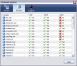

Setup
I’ll assume you have installed the WebMail extension and at least one of the optional components, if you haven't please do so.
The first step is to check the WebMail extension is running. Go to the WebMail options, on the server panel the status of the three servers is displayed. The status for the enabled server(s) should be "Running". If the WebMail extension fails to start this could be due to the operating system blocking ports below 1024, try setting the port to value higher than 1024 and restart Thunderbird.

-
Check you have installed the necessary domain handlers. Go to WebMail options, on the domains panel is a list of supported domains.
